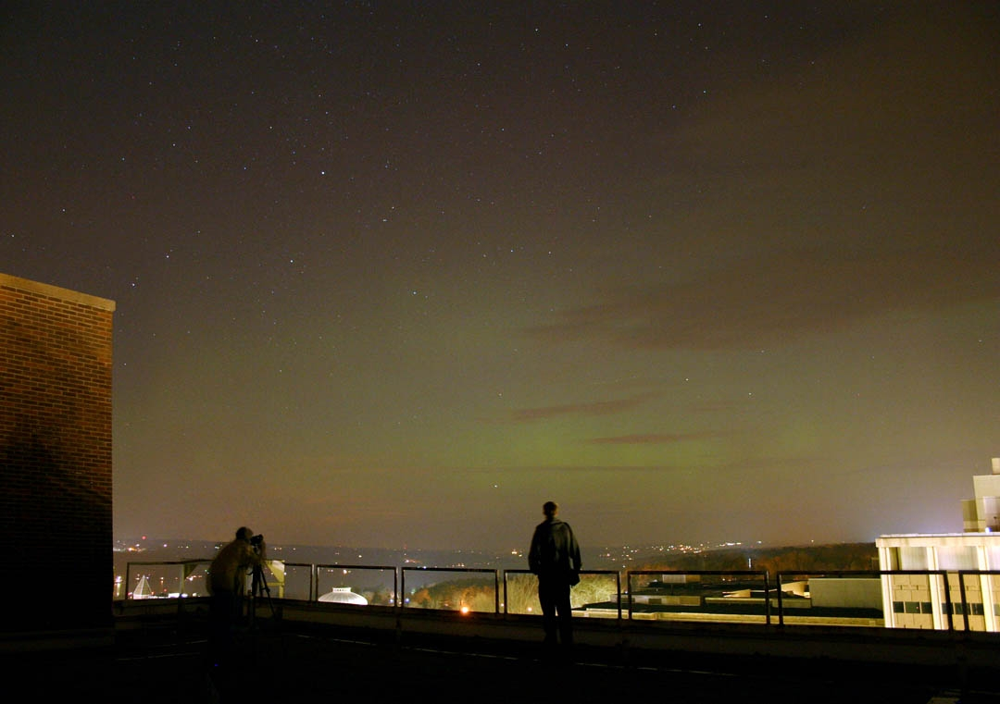
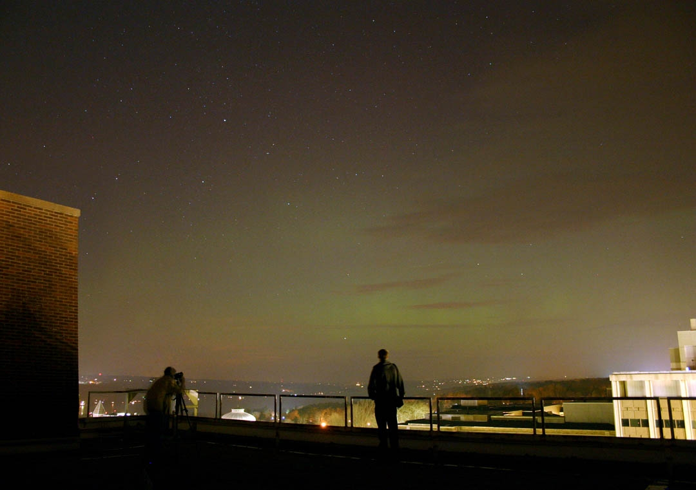

December Aurorae
This picture of the December 2006 outburst was taken from the roof of the Space Sciences Building through partly cloudy skies. The two CAS members in the photo are Jagadheep (left) and Mike (center).

This picture of the December 2006 outburst was taken from the roof of the Space Sciences Building through partly cloudy skies. The two CAS members in the photo are Jagadheep (left) and Mike (center).
